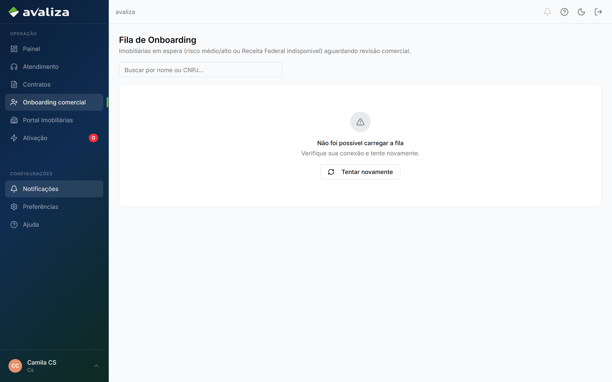
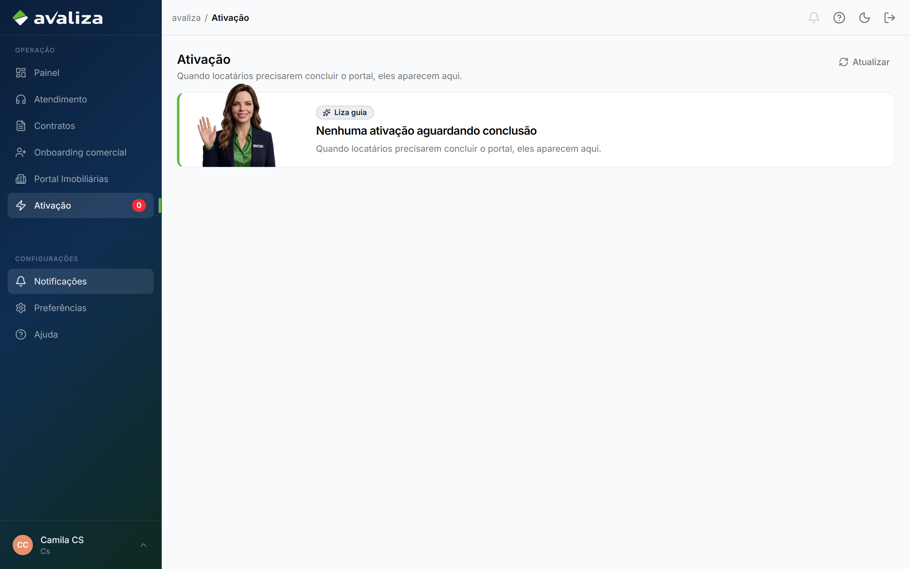
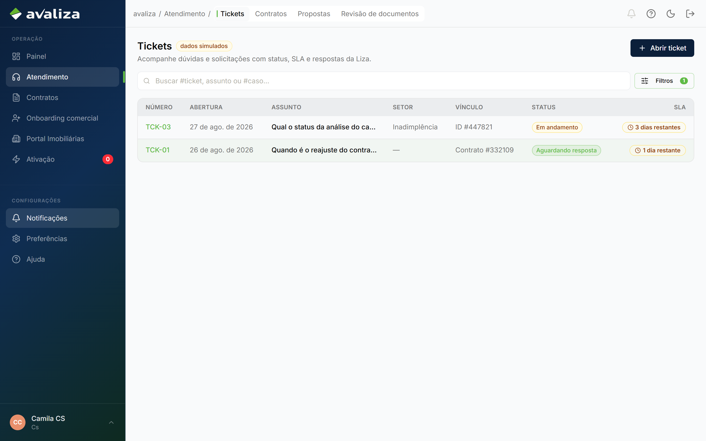
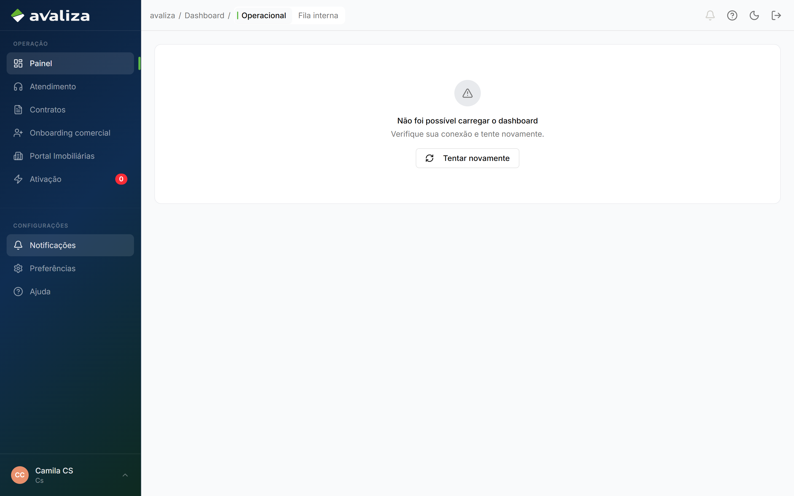
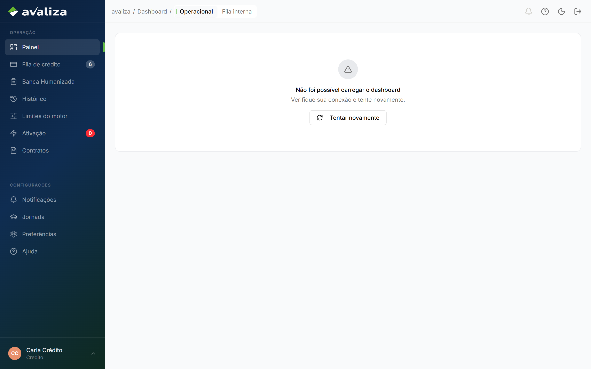
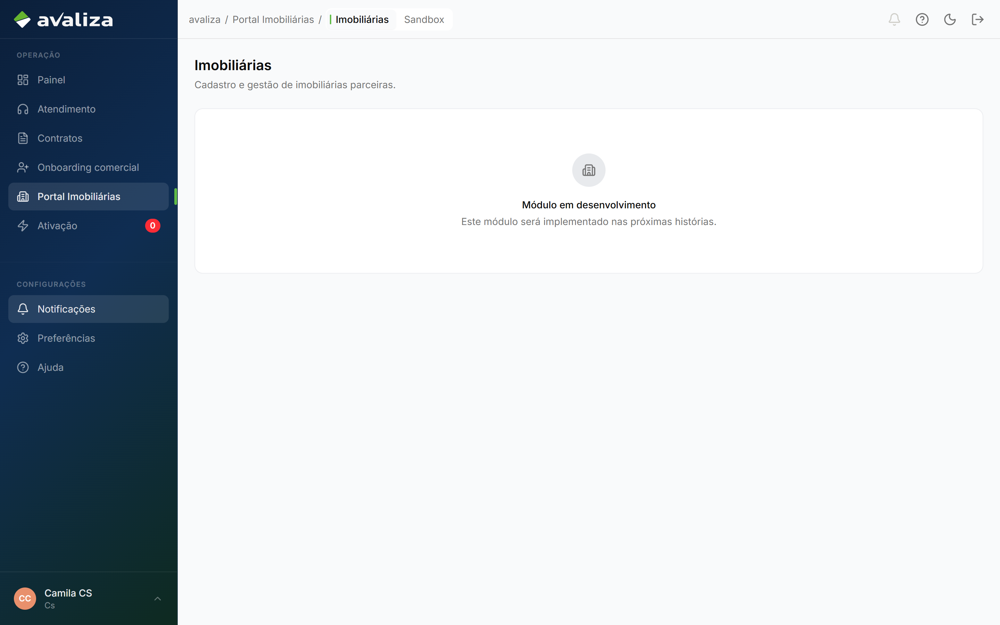
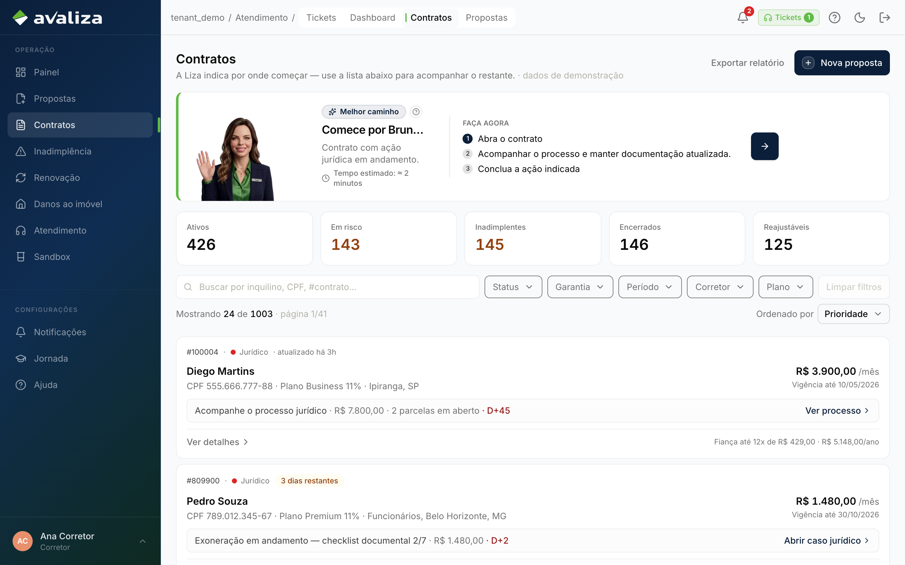

Documento para o responsável · Analista de CS
Para: Responsável de CS
Customer Success
CS não fecha nenhum ciclo deste grafo. Observa onboarding, acompanha a fila de ativação e trabalha ticket do setor. Portal Imobiliárias ainda é placeholder.
O que vocês fazem
O trabalho no produto, na ordem em que costuma aparecer no dia. Tela é evidência; não é etapa de um tour.
-
Olhar a fila de onboarding
A mesma fila do comercial. CS não aprova o cadastro — só vê.
Onboarding da imobiliária ·
/onboarding-comercial
/onboarding-comercial -
Acompanhar ativação travada
Quem executa é o locatário no portal. /ativacao no shell de CS é acompanhamento.
Ativação do locatário ·
/ativacao
/ativacao -
Trabalhar ticket do setor
Chamado triado para CS. Não origina proposta e não cobre IN.
Ticket de atendimento ·
/atendimento
/atendimento -
Consultar contratos da carteira
Leitura. Ativar é o portal do locatário.
/contratos
/contratos
Ciclos que vocês fecham
Jornadas cujo resultado é deste setor. Fronteira, não o passo a passo acima.
Este setor não é dono de nenhum ciclo do grafo. A responsabilidade está nas participações e nas capacidades abaixo.
Ciclos em que só aparecem
Participam da operação. Quem fecha o ciclo é outro setor.
participa · dono: Comercial Onboarding da imobiliária Parceiro ainda sem conta abre /onboarding (CNPJ, responsável, admin). participa · dono: Portais do locatário Ativação do locatário Link /ativacao/{token} no e-mail/SMS. O locatário não tem login no shell. participa · dono: Atendimento Ticket de atendimento Alguém tem uma dúvida/bloqueio e abre chamado (ou a Liza faz handoff).Isto não é de vocês
Confusão típica deste time. O dono está no link.
- Onboarding da imobiliária — dono: Comercial. Aprovar cadastro é clique do comercial. A sidebar de CS só vê a mesma fila.
- Ativação do locatário — dono: Portais do locatário. Quem executa é o locatário. /ativacao no shell de CS é acompanhamento.
- Nova proposta — dono: Imobiliária. Originar garantia não é CS.
Recebem de
- Nenhum setor é obrigado a disparar os ciclos de vocês.
Passam para
- Os ciclos de vocês não disparam outra jornada. O resultado fica aqui.
Capacidades do shell (não são jornadas)
Menu e leitura. Não fecham ciclo — mas são as telas que o time abre no dia a dia além do trabalho acima.
-
Painel operacional
Ponto de partida do dia, não um ciclo de negócio.
/dashboard
/dashboard -
Portal Imobiliárias
Módulo em desenvolvimento — não há jornada de ficha/saúde/treino.
/imobiliarias
/imobiliarias -
Consulta de contratos
Carteira. Originar é Nova proposta; ativar é o portal.
/contratos
/contratos